Hexo博客（主题：yilia）添加Valine评论系统
本文最后更新于：2019年1月28日 中午
序言
其实网上关于Hexo的博客添加Valine评论系统的是教程很多的，但是大多针对Next那个主题，确实那个主题各方面的功能都做得很完善了，但是我还是比较喜欢yilia这个主题，然而这两个主题的文件结构就很不一样，教程并不能直接用到yilia这个主题上来。
在我使用yilia主题添加Valine评论系统的过程中着实遇到不少问题，个人没有在网上找到一份完全针对yilia主题添加valine评论系统的详细教程，所以写下这篇教程，也算是写的笔记吧，也许有后来者能用得上。
添加相关代码
yilia主题支持了多说、网易云跟帖、畅言、Disqus以及Gitment，但似乎没有写好的valine代码，所以我们首先要手动添加相关代码。
下面的代码来源于yilia主题下的一个Issue：新增对Valine评论系统的支持，可以参照一下（不想踩坑的话请就看我这篇文章，不用谢我），但是对小白来说可能并不太清楚，代码添加到某一个文件，但是并没有说具体添加到什么位置，所以我根据自己的经历写一下对小白来说更加切实的步骤。
需要修改的有三个地方，都是主题目录下对应的文件，不是博客目录，修改后记得保存。
1._config.yml
yilia主题根目录下的_config.yml，不是博客根目录下的_config.yml，打开后添加到什么位置都可以，但是建议根据已经写好的几个评论系统就对应的添加到#5、Gitment的下方
#6、Valine https://valine.js.org
valine:
appid: #Leancloud应用的appId
appkey: #Leancloud应用的appKey
verify: false #验证码，verify和notify这两个最好就别动了
notify: false #评论回复提醒
avatar: mm #评论列表头像样式：''/mm/identicon/monsterid/wavatar/retro/hide
placeholder: Just go go #评论框占位符如图：
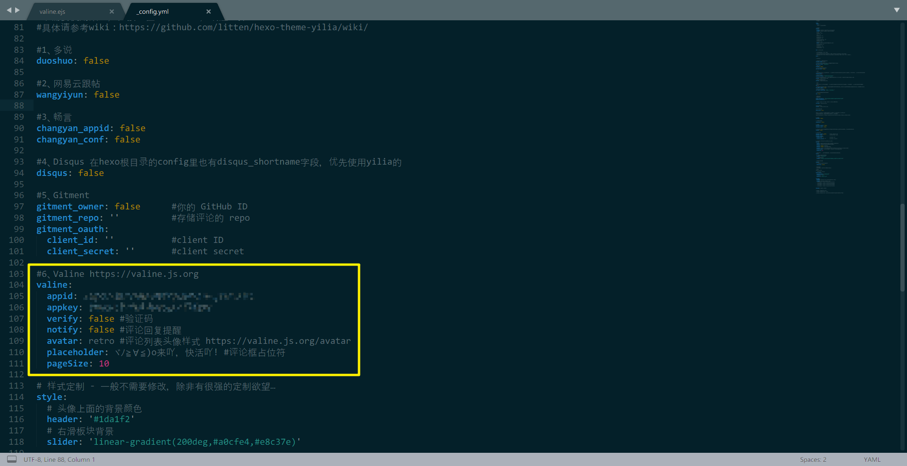
2.layout/_partial/article.ejs
这段代码改过一点点，添加了一个判断条件如果在博客首页就不执行下面的代码（具体添加了下面代码的第一行和最后一行），也就是只在阅读全文的时候才在文章底部显示评论框，原Issue下的代码不含这个判断条件，也就是首页每篇博客下方都会有一个评论框，这应该不是我们想要的。
<% if (!index){ %>
<% if (theme.valine && theme.valine.appid && theme.valine.appkey){ %>
<section id="comments" class="comments">
<style>
.comments{margin:30px;padding:10px;background:#fff}
@media screen and (max-width:800px){.comments{margin:auto;padding:10px;background:#fff}}
</style>
<%- partial('post/valine', {
key: post.slug,
title: post.title,
url: config.url+url_for(post.path)
}) %>
</section>
<% } %>
<% } %>直接插入在最后面就可以，可以看到上面一段就是Gitment评论系统的相关代码，如图：
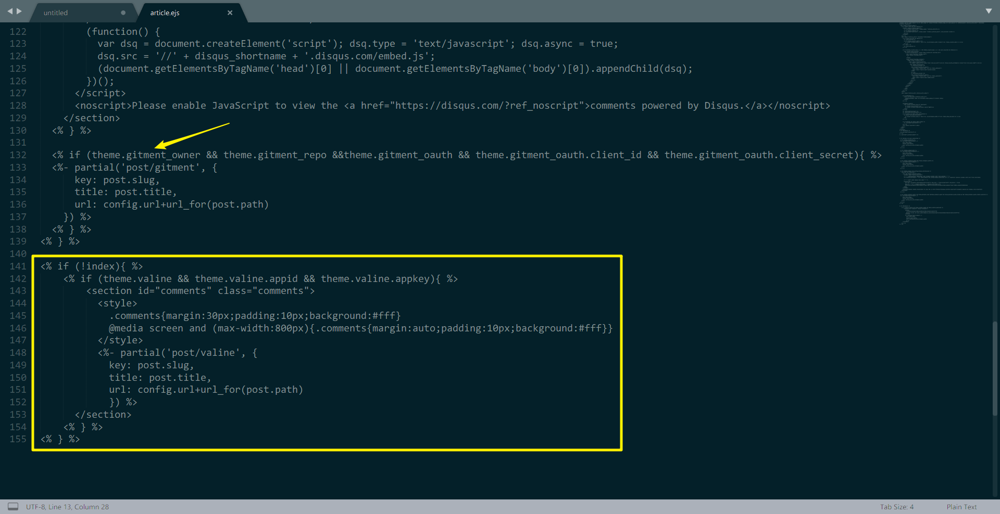
3.layout/_partial/post/valine.ejs
这个文件是没有的，按照标题路径新建一个valine.ejs，再把下面的代码添加添加进去，保存，注意和Issue给出的代码可能不太一样，说过了不想踩坑请直接使用我给出的。
<div id="vcomment" class="comment"></div>
<script src="//cdn1.lncld.net/static/js/3.0.4/av-min.js"></script>
<script src='//unpkg.com/valine/dist/Valine.min.js'></script>
<script src="https://cdnjs.loli.net/ajax/libs/jquery/3.2.1/jquery.min.js"></script>
<script>
var notify = '<%= theme.valine.notify %>' == true ? true : false;
var verify = '<%= theme.valine.verify %>' == true ? true : false;
new Valine({
av: AV,
el: '#vcomment',
notify: notify,
app_id: "<%= theme.valine.appid %>",
app_key: "<%= theme.valine.appkey %>",
placeholder: "<%= theme.valine.placeholder %>",
avatar:"<%= theme.valine.avatar %>",
});
</script>评论安装
接下来就要使用到Leancloud了，大概就是作为我们Valine评论系统的服务器，因为Valine首页就介绍了Valine是“一款快速、简洁且高效的无后端评论系统”，自行注册一个账号并登录。
创建一个应用，应用名看个人喜好。
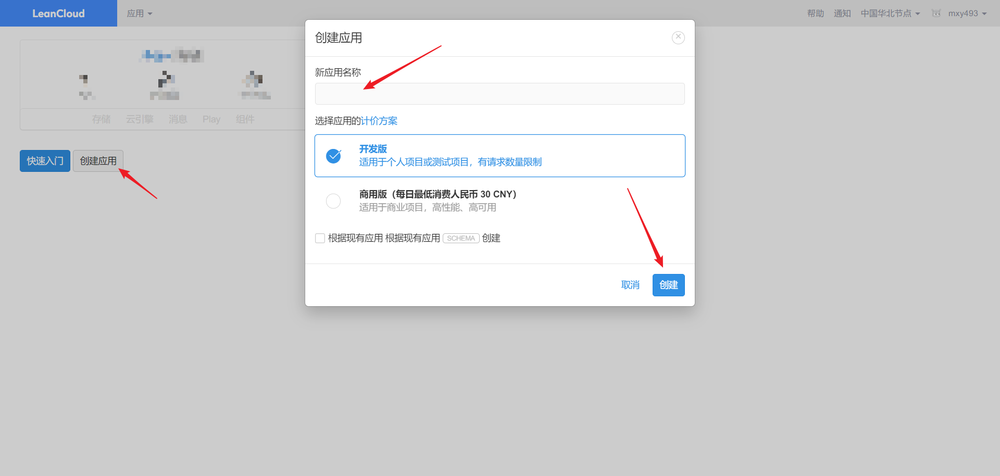
选择刚刚创建的应用>设置>选择应用 Key，然后你就能看到你的App ID和App Key了，参考下图：
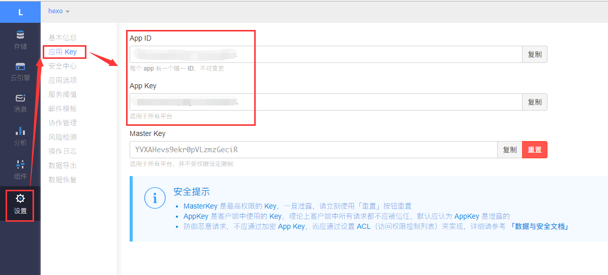
分别复制App ID和App Key粘贴到前面设置的主题根目录下的_config.yml里对应位置，注意“:”后面必须要有一个空格，如图：

为了数据安全，再填写一下安全域名，应用>设置>安全设置中的Web 安全域名，如果是Hexo一般填写自己博客主页的地址和http://localhost:4000/就可以了，如下图：
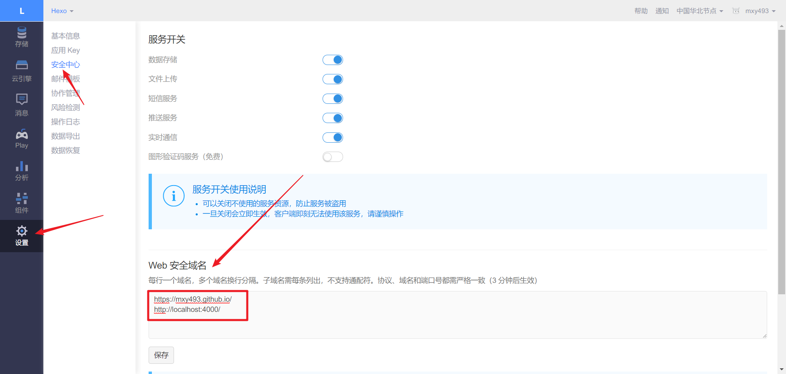
到这里，你的评论系统就已经可以工作了！
当然修改了相关代码需要重新部署博客，三步操作：
$ hexo clean
$ hexo g
$ hexo s #本地测试用http://localhost:4000/访问即可，也可以hexo d部署到云端自己写条评论试试呢，评论的数据会保存到Leancloud你创建的应用里，具体可以登录Leancloud，选择应用>存储>Comment，评论的所有相关信息都可以在这儿看到：
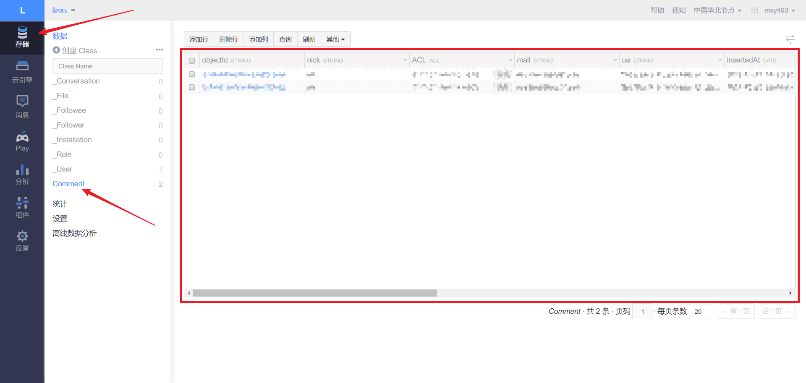
到此如果没有更多的需求已经可以结束不折腾了，进一步的下面介绍实现邮件通知的功能。
部署云引擎（邮件通知）
这一部分主要参考这篇博客Valine Admin 配置手册。
1.填写代码仓库
在Leancloud云引擎设置界面，填写代码库并保存：https://github.com/DesertsP/Valine-Admin.git（直接复制填上去就行，不是要自己建一个类似的代码仓库，另外注意这个链接是否有变动）
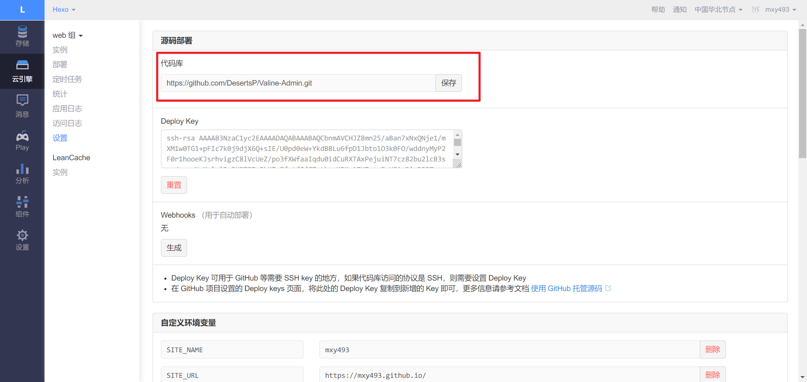
2.设置环境变量以及Web 二级域名
在设置页面，设置环境变量以及 Web 二级域名。先后顺序没什么影响，不过可以先设置 Web 二级域名，需要实名认证，自己认证一下。
Web 二级域名用于评论后台管理，如https://mxy493.leanapp.cn

环境变量必填参数务必正确设置：
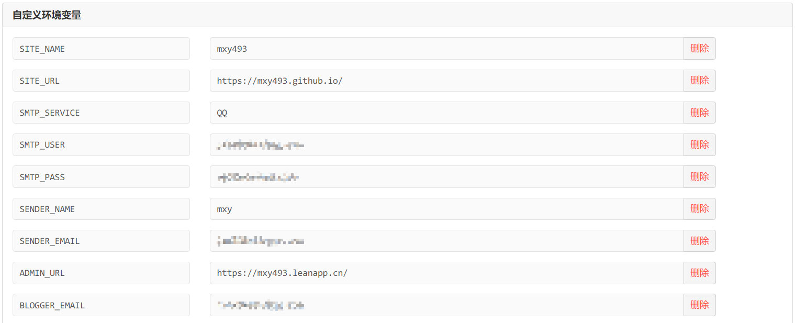
这里虽然部分是选填的，但是个人建议都填上吧，当然首先要填对，填错了那就没用了。
SMTP_SERVICE建议用QQ，目前我用的QQ邮箱没有任何问题，163邮箱在我设置的过程中似乎有不能发送邮件的问题，应该是网易邮箱那边的限制所以无关你设置得对不对，Gmail似乎是因为被墙了会连接超时，其它我没试过。
| 变量 | 示例 | 说明 |
|---|---|---|
| SITE_NAME | Deserts | [必填]博客名称 |
| SITE_URL | https://mxy493.github.io/ | [必填]首页地址 |
| SMTP_SERVICE | [新版支持]邮件服务提供商，支持 QQ、163、126、Gmail 以及 更多 | |
| SMTP_USER | xxxxxx@qq.com | [必填]SMTP登录用户 |
| SMTP_PASS | ccxxxxxxxxch | [必填]SMTP登录密码（QQ邮箱需要获取独立密码） |
| SENDER_NAME | mxy | [必填]发件人 |
| SENDER_EMAIL | xxxxxx@qq.com | [必填]发件邮箱 |
| ADMIN_URL | https://xxx.leanapp.cn/ | [建议]Web主机二级域名，用于自动唤醒 |
| BLOGGER_EMAIL | xxxxxx@qq.com | [可选]博主通知收件地址，默认使用SENDER_EMAIL |
注：环境变量有任何更改都需要重启应用才能生效（云引擎>实例>设置>重启）

3.部署实例
切换到部署标签页，分支使用master，点击部署即可。

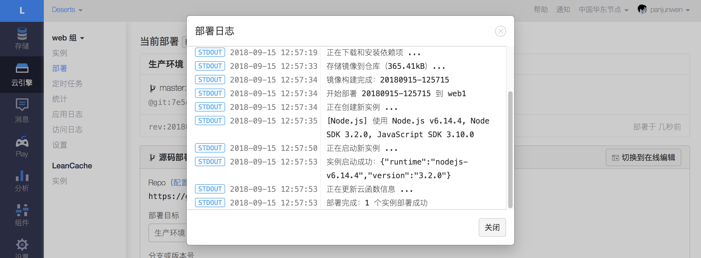
部署日志显示“部署完成，1个实例部署成功”就部署好了，点击关闭即可。
4.评论管理
访问设置的二级域名https://二级域名.leanapp.cn/sign-up，注册管理员登录信息，如：https://mxy493.leanapp.cn/sign-up
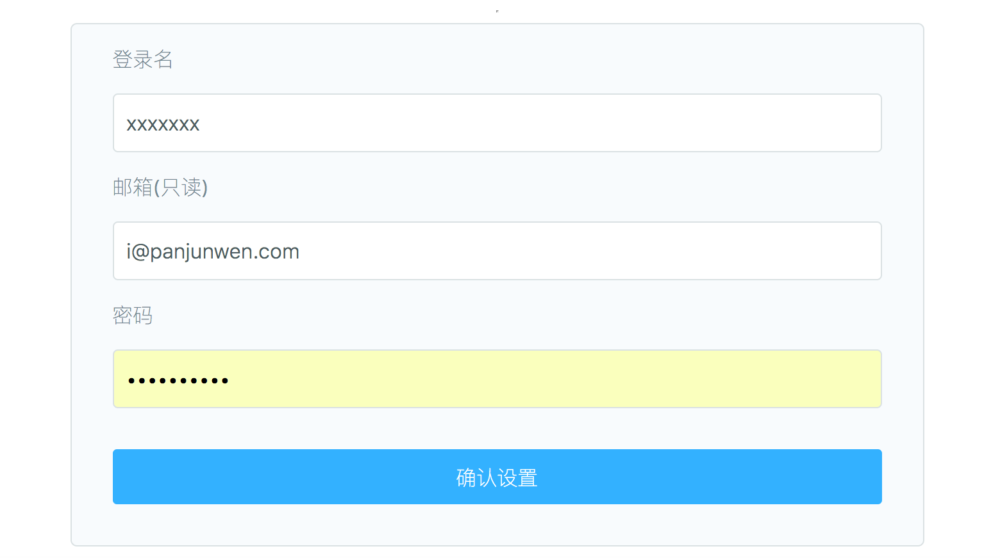
注：使用原版Valine如果遇到注册页面不显示直接跳转至登录页的情况，请手动删除_User表中的全部数据。
5.设置定时任务
进入云引擎>定时任务，创建定时器，创建两个定时任务。
1.半小时自动唤醒
选择self-wake云函数，Cron表达式为0 0/30 7-23 * * ?，表示每天早6点到晚23点每隔30分钟访问云引擎，确定环境变量ADMIN_URL设置正确：

2.八点叫我发邮件
选择resend-mails云函数，Cron表达式为0 0 8 * * ?，表示每天早8点检查过去24小时内漏发的通知邮件并补发：

添加完计时器记得点击启动。
至此，评论已经可以通过邮件发送通知了。
邮件通知模板
这一部分可选，懒得折腾可以到此为止！
邮件通知模板在云引擎环境变量中设定，可自定义通知邮件标题及内容模板。
邮件通知包含两种，分别是“被@通知”和“博主通知”，这两种模板都可以完全自定义。默认使用经典的蓝色风格模板（样式来源未知）。
| 环境变量 | 示例 | 说明 |
|---|---|---|
| MAIL_TEMPLATE_ADMIN | 见下文 |
[可选]博主邮件通知内容模板 |
| MAIL_SUBJECT_ADMIN | ${SITE_NAME}上有新评论了 | [可选]博主邮件通知主题模板 |
| MAIL_TEMPLATE | 见下文 |
[可选]被@通知邮件内容模板 |
| MAIL_SUBJECT | ${PARENT_NICK}，您在${SITE_NAME}上的评论收到了回复 | [可选]被@通知邮件主题（标题）模板 |
- 默认博主通知邮件内容模板：
<div style="border-top:2px solid #12ADDB;box-shadow:0 1px 3px #AAAAAA;line-height:180%;padding:0 15px 12px;margin:50px auto;font-size:12px;"><h2 style="border-bottom:1px solid #DDD;font-size:14px;font-weight:normal;padding:13px 0 10px 8px;">您在<a style="text-decoration:none;color: #12ADDB;" href="${SITE_URL}" target="_blank">${SITE_NAME}</a>上的文章有了新的评论</h2><p><strong>${NICK}</strong>回复说：</p><div style="background-color: #f5f5f5;padding: 10px 15px;margin:18px 0;word-wrap:break-word;"> ${COMMENT}</div><p>您可以点击<a style="text-decoration:none; color:#12addb" href="${POST_URL}" target="_blank">查看回复的完整內容</a><br></p></div></div>博主通知邮件模板中的可用变量与@通知中的基本一致，PARENT_NICK 和 PARENT_COMMENT 变量不再可用。
- 默认被@通知邮件内容模板：
<div style="border-top:2px solid #12ADDB;box-shadow:0 1px 3px #AAAAAA;line-height:180%;padding:0 15px 12px;margin:50px auto;font-size:12px;"><h2 style="border-bottom:1px solid #DDD;font-size:14px;font-weight:normal;padding:13px 0 10px 8px;">您在<a style="text-decoration:none;color: #12ADDB;" href="${SITE_URL}" target="_blank"> ${SITE_NAME}</a>上的评论有了新的回复</h2> ${PARENT_NICK} 同学，您曾发表评论：<div style="padding:0 12px 0 12px;margin-top:18px"><div style="background-color: #f5f5f5;padding: 10px 15px;margin:18px 0;word-wrap:break-word;"> ${PARENT_COMMENT}</div><p><strong>${NICK}</strong>回复说：</p><div style="background-color: #f5f5f5;padding: 10px 15px;margin:18px 0;word-wrap:break-word;"> ${COMMENT}</div><p>您可以点击<a style="text-decoration:none; color:#12addb" href="${POST_URL}" target="_blank">查看回复的完整內容</a>，欢迎再次光临<a style="text-decoration:none; color:#12addb" href="${SITE_URL}" target="_blank">${SITE_NAME}</a>。<br></p></div></div>效果图：

- 彩虹风格的被@邮件通知模板：
<div style="border-radius: 10px 10px 10px 10px;font-size:13px; color: #555555;width: 666px;font-family:'Century Gothic','Trebuchet MS','Hiragino Sans GB',微软雅黑,'Microsoft Yahei',Tahoma,Helvetica,Arial,'SimSun',sans-serif;margin:50px auto;border:1px solid #eee;max-width:100%;background: #ffffff repeating-linear-gradient(-45deg,#fff,#fff 1.125rem,transparent 1.125rem,transparent 2.25rem);box-shadow: 0 1px 5px rgba(0, 0, 0, 0.15);"><div style="width:100%;background:#49BDAD;color:#ffffff;border-radius: 10px 10px 0 0;background-image: -moz-linear-gradient(0deg, rgb(67, 198, 184), rgb(255, 209, 244));background-image: -webkit-linear-gradient(0deg, rgb(67, 198, 184), rgb(255, 209, 244));height: 66px;"><p style="font-size:15px;word-break:break-all;padding: 23px 32px;margin:0;background-color: hsla(0,0%,100%,.4);border-radius: 10px 10px 0 0;">您在<a style="text-decoration:none;color: #ffffff;" href="${SITE_URL}"> ${SITE_NAME}</a>上的留言有新回复啦！</p></div><div style="margin:40px auto;width:90%"><p>${PARENT_NICK} 同学，您曾在文章上发表评论：</p><div style="background: #fafafa repeating-linear-gradient(-45deg,#fff,#fff 1.125rem,transparent 1.125rem,transparent 2.25rem);box-shadow: 0 2px 5px rgba(0, 0, 0, 0.15);margin:20px 0px;padding:15px;border-radius:5px;font-size:14px;color:#555555;">${PARENT_COMMENT}</div><p>${NICK} 给您的回复如下：</p><div style="background: #fafafa repeating-linear-gradient(-45deg,#fff,#fff 1.125rem,transparent 1.125rem,transparent 2.25rem);box-shadow: 0 2px 5px rgba(0, 0, 0, 0.15);margin:20px 0px;padding:15px;border-radius:5px;font-size:14px;color:#555555;">${COMMENT}</div><p>您可以点击<a style="text-decoration:none; color:#12addb" href="${POST_URL}#comments">查看回复的完整內容</a>，欢迎再次光临<a style="text-decoration:none; color:#12addb" href="${SITE_URL}"> ${SITE_NAME}</a>。</p><style type="text/css">a:link{text-decoration:none}a:visited{text-decoration:none}a:hover{text-decoration:none}a:active{text-decoration:none}</style></div></div>效果图：
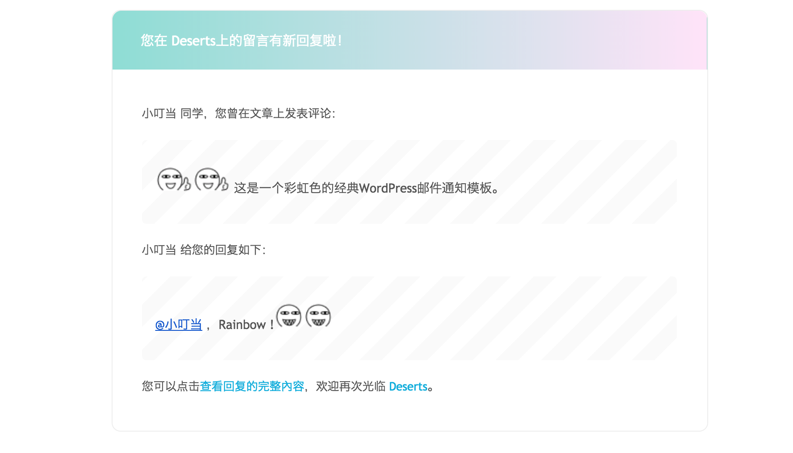
被@通知模板中的可用变量如下（注，这是邮件模板变量，是指嵌入到HTML邮件模板中的变量，请勿与云引擎环境变量混淆）：
| 模板变量 | 说明 |
|---|---|
| SITE_NAME | 博客名称 |
| SITE_URL | 博客首页地址 |
| POST_URL | 文章地址（完整路径） |
| PARENT_NICK | 收件人昵称（被@者，父级评论人） |
| PARENT_COMMENT | 父级评论内容 |
| NICK | 新评论者昵称 |
| COMMENT | 新评论内容 |
有需求代码部分可以自定义，没有需求的话直接复制博主邮件通知代码到MAIL_TEMPLATE_ADMIN，复制被@通知代码到MAIL_TEMPLATE，保存即可。
注：修改了环境变量需要重启实例。
本博客所有文章除特别声明外，均采用 CC BY-SA 4.0 协议 ，转载请注明出处！